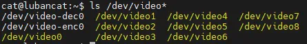
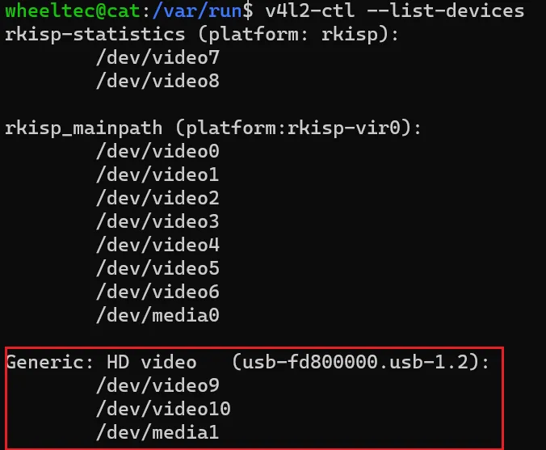

<!DOCTYPE lake>
<h1 data-lake-id="UH0Zp" id="UH0Zp"><span data-lake-id="uf331e2de" id="uf331e2de" style="color: var(--yq-text-primary)">摄像头使用-opencv</span></h1><p data-lake-id="u54ee50c2" id="u54ee50c2"><strong><span class="lake-fontsize-22" data-lake-id="ubc353737" id="ubc353737" style="color: var(--yq-text-primary)">1.泰山派板卡添加camera</span></strong><span class="lake-fontsize-22" data-lake-id="u456df908" id="u456df908" style="color: var(--yq-text-primary)"><br/></span><span class="lake-fontsize-12" data-lake-id="u86f03b70" id="u86f03b70" style="color: rgb(64, 64, 64); background-color: rgb(252, 252, 252)">连接摄像头连接到usb接口,查看dev设备:</span></p><span class="yuque-card-unsupported">[codeblock]</span><p data-lake-id="u5cc2918b" id="u5cc2918b"><span class="lake-fontsize-11" data-lake-id="u61036f1b" id="u61036f1b" style="color: var(--yq-text-primary)"><br/></span><span class="lake-fontsize-12" data-lake-id="u944b7e9a" id="u944b7e9a" style="color: rgb(64, 64, 64); background-color: rgb(252, 252, 252)">检查板卡上的camera设备资源示例</span><span class="lake-fontsize-11" data-lake-id="uf86edf7a" id="uf86edf7a" style="color: var(--yq-text-primary)"><br/><br/></span></p><p data-lake-id="u13ebba64" id="u13ebba64"></p><p data-lake-id="u53fa1c94" id="u53fa1c94"><span class="lake-fontsize-11" data-lake-id="ua965e1a1" id="ua965e1a1" style="color: var(--yq-text-primary)"><br/></span><span class="lake-fontsize-11" data-lake-id="u0dcca180" id="u0dcca180" style="color: var(--yq-text-primary)">也可以使用v4l2命令查看</span></p><span class="yuque-card-unsupported">[codeblock]</span><p data-lake-id="uc38bb0e2" id="uc38bb0e2"><span class="lake-fontsize-11" data-lake-id="u349c4977" id="u349c4977" style="color: var(--yq-text-primary)"><br/></span><span class="lake-fontsize-12" data-lake-id="ue655cdf7" id="ue655cdf7" style="color: var(--yq-text-primary)">v4l2-ctl --list-devices是一个命令行工具命令，用于列出系统中可用的视频设备列表及其相关信息。它是V4L2（Video for Linux Two）的一部分，用于查看和管理视频设备。</span><span class="lake-fontsize-11" data-lake-id="ubeb5913d" id="ubeb5913d" style="color: var(--yq-text-primary)"><br/></span><span class="lake-fontsize-11" data-lake-id="ucef4db52" id="ucef4db52" style="color: var(--yq-text-primary)">V4L2（Video for Linux Two）是Linux内核中的一个框架，用于支持视频设备的捕捉、显示和编解码等功能。它是Video4Linux的第二个版本。<br/><br/></span></p><p data-lake-id="u2854faa7" id="u2854faa7"></p><p data-lake-id="uafc4495b" id="uafc4495b"><span class="lake-fontsize-11" data-lake-id="u0eb7e8ff" id="u0eb7e8ff" style="color: var(--yq-text-primary)"><br/></span><span class="lake-fontsize-11" data-lake-id="u0e56f4bf" id="u0e56f4bf" style="color: var(--yq-text-primary)">两个video:<br/></span><span class="lake-fontsize-11" data-lake-id="u61605be3" id="u61605be3" style="color: rgb(0, 0, 0)">一个是图像/视频采集，一个是metadata采集</span><span class="lake-fontsize-11" data-lake-id="u43069905" id="u43069905" style="color: var(--yq-text-primary)"><br/></span><strong><span class="lake-fontsize-22" data-lake-id="u41413572" id="u41413572" style="color: rgb(0, 0, 0)">2.相关工具库安装</span></strong><span class="lake-fontsize-22" data-lake-id="u46228264" id="u46228264" style="color: var(--yq-text-primary)"><br/></span><span class="lake-fontsize-11" data-lake-id="u4f908a76" id="u4f908a76" style="color: var(--yq-text-primary)">安装opencv</span></p><span class="yuque-card-unsupported">[codeblock]</span><p data-lake-id="u0c86f364" id="u0c86f364"><span class="lake-fontsize-11" data-lake-id="u999cf4b0" id="u999cf4b0" style="color: var(--yq-text-primary)"><br/></span><span class="lake-fontsize-11" data-lake-id="uced8cbed" id="uced8cbed" style="color: var(--yq-text-primary)">验证是否安装成功</span></p><span class="yuque-card-unsupported">[codeblock]</span><p data-lake-id="u69a85d23" id="u69a85d23"><span class="lake-fontsize-11" data-lake-id="u26544e5b" id="u26544e5b" style="color: var(--yq-text-primary)"><br/></span><strong><span class="lake-fontsize-22" data-lake-id="u51356b36" id="u51356b36" style="color: var(--yq-text-primary)">3.摄像头拍照</span></strong></p><span class="yuque-card-unsupported">[codeblock]</span><p data-lake-id="u7d2ff3b1" id="u7d2ff3b1"><span data-lake-id="u60ace03f" id="u60ace03f">执行程序:</span></p><span class="yuque-card-unsupported">[codeblock]</span><p data-lake-id="ud9290a6a" id="ud9290a6a"><span data-lake-id="u338d8cbf" id="u338d8cbf">可以通过下面方法获取摄像头的video编号</span></p><span class="yuque-card-unsupported">[codeblock]</span><h2 data-lake-id="ouf1c" id="ouf1c"><span data-lake-id="ua4accd4a" id="ua4accd4a" style="color: rgb(64, 64, 64); background-color: rgb(252, 252, 252)">录制视频</span></h2><span class="yuque-card-unsupported">[codeblock]</span><p data-lake-id="u7ed944b5" id="u7ed944b5"><span class="lake-fontsize-11" data-lake-id="u6d7a1fda" id="u6d7a1fda" style="color: var(--yq-text-primary)"><br/></span><span class="lake-fontsize-11" data-lake-id="u2cb2998a" id="u2cb2998a" style="color: var(--yq-text-primary)">录制视频格式</span></p><table class="lake-table" data-lake-id="GBiBs" id="GBiBs" margin="true" style="width: 618px"><colgroup><col width="244"/><col width="374"/></colgroup><tbody><tr data-lake-id="u38309122" id="u38309122"><td data-lake-id="uda560f2a" id="uda560f2a"><p data-lake-id="u811c323e" id="u811c323e"><span class="lake-fontsize-11" data-lake-id="ue8f6c25c" id="ue8f6c25c" style="color: var(--yq-text-primary)">参数</span><span class="lake-fontsize-11" data-lake-id="ua91451e2" id="ua91451e2" style="color: var(--yq-text-primary)"><br/><br/></span></p></td><td data-lake-id="u9f52b17e" id="u9f52b17e"><p data-lake-id="ufbf4c37d" id="ufbf4c37d"><span class="lake-fontsize-11" data-lake-id="u588427fa" id="u588427fa" style="color: var(--yq-text-primary)">解释</span><span class="lake-fontsize-11" data-lake-id="ub7fcbac3" id="ub7fcbac3" style="color: var(--yq-text-primary)"><br/><br/></span></p></td></tr><tr data-lake-id="ud6094655" id="ud6094655"><td data-lake-id="uc6af3756" id="uc6af3756"><p data-lake-id="u5b505d67" id="u5b505d67"><span class="lake-fontsize-11" data-lake-id="u092781a8" id="u092781a8" style="color: rgb(79, 79, 79)">VideoWriter_fourcc('M','P','4','V')</span><span class="lake-fontsize-11" data-lake-id="u58a63041" id="u58a63041" style="color: var(--yq-text-primary)"><br/><br/></span></p></td><td data-lake-id="u1a82c136" id="u1a82c136"><p data-lake-id="uceefb860" id="uceefb860"><span class="lake-fontsize-11" data-lake-id="u335923a8" id="u335923a8" style="color: var(--yq-text-primary)">MPEG-4编码 .mp4 可指定结果视频的大小</span><span class="lake-fontsize-11" data-lake-id="uefe0ebfc" id="uefe0ebfc" style="color: var(--yq-text-primary)"><br/><br/></span></p></td></tr><tr data-lake-id="uc996e1d7" id="uc996e1d7"><td data-lake-id="u3bac01a9" id="u3bac01a9"><p data-lake-id="u48c76387" id="u48c76387"><span class="lake-fontsize-11" data-lake-id="u7f9d7fb6" id="u7f9d7fb6" style="color: rgb(79, 79, 79)">VideoWriter_fourcc('X','2','6','4')</span><span class="lake-fontsize-11" data-lake-id="ub896ae43" id="ub896ae43" style="color: var(--yq-text-primary)"><br/><br/></span></p></td><td data-lake-id="u05ecef15" id="u05ecef15"><p data-lake-id="u3e2f6e7a" id="u3e2f6e7a"><span class="lake-fontsize-11" data-lake-id="u4032ed29" id="u4032ed29" style="color: var(--yq-text-primary)">MPEG-4编码 .mp4 可指定结果视频的大小</span><span class="lake-fontsize-11" data-lake-id="uc59b17fa" id="uc59b17fa" style="color: var(--yq-text-primary)"><br/><br/></span></p></td></tr><tr data-lake-id="u869cbb88" id="u869cbb88"><td data-lake-id="u176014f5" id="u176014f5"><p data-lake-id="ud8ca16d8" id="ud8ca16d8"><span class="lake-fontsize-11" data-lake-id="u30ac650a" id="u30ac650a" style="color: var(--yq-text-primary)">VideoWriter_fourcc('I', '4', '2', '0')</span><span class="lake-fontsize-11" data-lake-id="uda673fae" id="uda673fae" style="color: var(--yq-text-primary)"><br/><br/></span></p></td><td data-lake-id="u58888bc0" id="u58888bc0"><p data-lake-id="u5f1e27a8" id="u5f1e27a8"><span class="lake-fontsize-11" data-lake-id="ua417823f" id="ua417823f" style="color: var(--yq-text-primary)">该参数是YUV编码类型，文件名后缀为.avi 广泛兼容，``但会产生大文件</span><span class="lake-fontsize-11" data-lake-id="u7c530678" id="u7c530678" style="color: var(--yq-text-primary)"><br/><br/></span></p></td></tr><tr data-lake-id="u99c5515c" id="u99c5515c"><td data-lake-id="u27c2a0b8" id="u27c2a0b8"><p data-lake-id="uaa955a45" id="uaa955a45"><span class="lake-fontsize-11" data-lake-id="udf4b2f23" id="udf4b2f23" style="color: var(--yq-text-primary)">VideoWriter_fourcc('P', 'I', 'M', 'I')</span><span class="lake-fontsize-11" data-lake-id="u7f877c86" id="u7f877c86" style="color: var(--yq-text-primary)"><br/><br/></span></p></td><td data-lake-id="u87d6924b" id="u87d6924b"><p data-lake-id="u6ae26e71" id="u6ae26e71"><span class="lake-fontsize-11" data-lake-id="u09036c42" id="u09036c42" style="color: var(--yq-text-primary)">该参数是MPEG-1编码类型，文件名后缀为.avi</span><span class="lake-fontsize-11" data-lake-id="u4119b7b4" id="u4119b7b4" style="color: var(--yq-text-primary)"><br/><br/></span></p></td></tr><tr data-lake-id="u6e17c45f" id="u6e17c45f"><td data-lake-id="ua127b826" id="ua127b826"><p data-lake-id="ue4f6aca3" id="ue4f6aca3"><span class="lake-fontsize-11" data-lake-id="ud833b2b1" id="ud833b2b1" style="color: var(--yq-text-primary)">VideoWriter_fourcc('X', 'V', 'I', 'D')</span><span class="lake-fontsize-11" data-lake-id="ucb95627b" id="ucb95627b" style="color: var(--yq-text-primary)"><br/><br/></span></p></td><td data-lake-id="u73b5877d" id="u73b5877d"><p data-lake-id="uee4fa18d" id="uee4fa18d"><span class="lake-fontsize-11" data-lake-id="uff0d2803" id="uff0d2803" style="color: var(--yq-text-primary)">该参数是MPEG-4编码类型，文件名后缀为.avi，``可指定结果视频的大小</span><span class="lake-fontsize-11" data-lake-id="ue4abce9a" id="ue4abce9a" style="color: var(--yq-text-primary)"><br/><br/></span></p></td></tr><tr data-lake-id="u68aea318" id="u68aea318"><td data-lake-id="uac36f1cb" id="uac36f1cb"><p data-lake-id="u4943aa0e" id="u4943aa0e"><span class="lake-fontsize-11" data-lake-id="u21cf4bae" id="u21cf4bae" style="color: var(--yq-text-primary)">VideoWriter_fourcc('T', 'H', 'E', 'O')</span><span class="lake-fontsize-11" data-lake-id="ub2b3e998" id="ub2b3e998" style="color: var(--yq-text-primary)"><br/><br/></span></p></td><td data-lake-id="uec70c99c" id="uec70c99c"><p data-lake-id="u3de9bb7f" id="u3de9bb7f"><span class="lake-fontsize-11" data-lake-id="ud0e1c62a" id="ud0e1c62a" style="color: var(--yq-text-primary)">该参数是</span><span class="lake-fontsize-11" data-lake-id="u203d840d" id="u203d840d" style="color: var(--yq-text-primary)">Ogg</span><span class="lake-fontsize-11" data-lake-id="u810a707a" id="u810a707a" style="color: var(--yq-text-primary)"> Vorbis,文件名后缀为.ogv</span><span class="lake-fontsize-11" data-lake-id="u121c3a17" id="u121c3a17" style="color: var(--yq-text-primary)"><br/><br/></span></p></td></tr><tr data-lake-id="uf5e48d0f" id="uf5e48d0f" style="height: 63px"><td data-lake-id="u466f2787" id="u466f2787"><p data-lake-id="u7129b363" id="u7129b363"><span class="lake-fontsize-11" data-lake-id="uf8576dbb" id="uf8576dbb" style="color: var(--yq-text-primary)">VideoWriter_fourcc('F', 'L', 'V', '1')</span><span class="lake-fontsize-11" data-lake-id="ue4fb4019" id="ue4fb4019" style="color: var(--yq-text-primary)"><br/><br/></span></p></td><td data-lake-id="u29ec9424" id="u29ec9424"><p data-lake-id="uc0f93464" id="uc0f93464"><span class="lake-fontsize-11" data-lake-id="ua1c70b2e" id="ua1c70b2e" style="color: var(--yq-text-primary)">该参数是Flash视频，文件名后缀为.flv</span></p></td></tr></tbody></table>